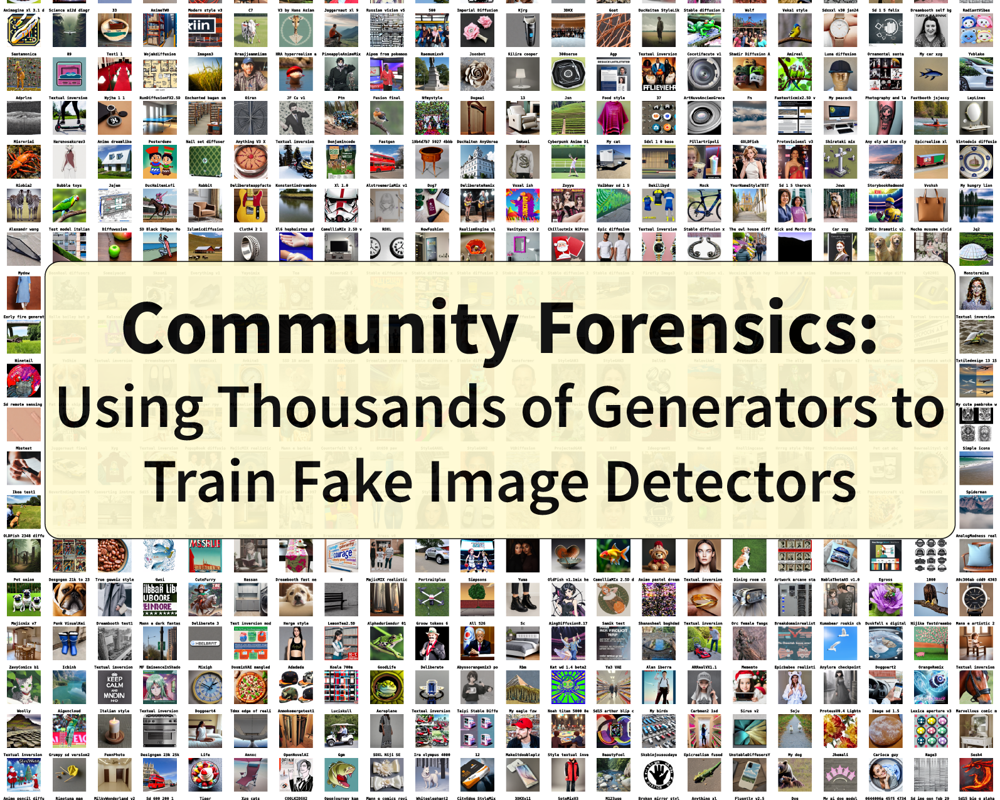
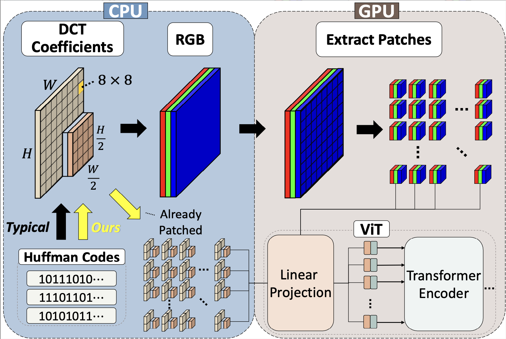
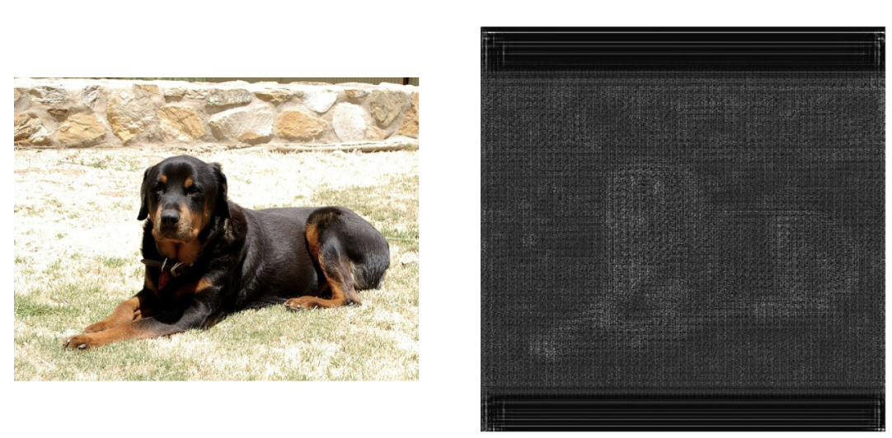

 Community Forensics: Using Thousands of Generators to Train Fake Image Detectors Jeongsoo Park, Andrew Owens CVPR 2025 Project page / Dataset / Code / arXiv We train fake image detectors using images from thousands of various generators to study generalization in detecting generated images.
 RGB no more: Minimally-decoded JPEG Vision Transformers Jeongsoo Park, Justin Johnson CVPR 2023 Project page / Code / arXiv We train ViTs directly from JPEG encoded features and accelerate train and eval by up to 39.2% and 17.9%.
 Auto-Tiler: Variable-Dimension Autoencoder with Tiling for Compressing Intermediate Feature Space of Deep Neural Networks for Internet of Things Jeongsoo Park, Jungrae Kim, Jong Hwan Ko Sensors, 2021 Paper We use autoencoders and show up to 67% higher accuracy and 81% reduced latency during network-constrained inference versus the image or video codec-based compression.